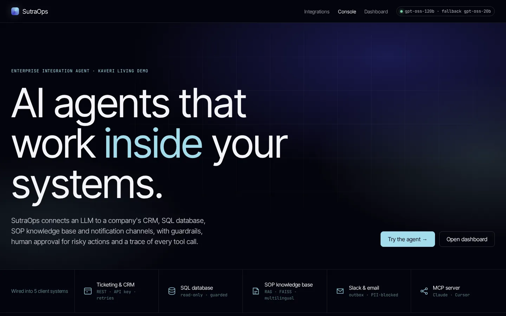

agentic ai · featured
SutraOps
An enterprise integration agent for a fictional Indian D2C brand, wired to a CRM/ticketing API, read-only SQL, multilingual RAG, Slack/email and an MCP server, with guardrails and human approval for risky actions.
- 88%task success
- 92%right tool
- 1.1smedian latency